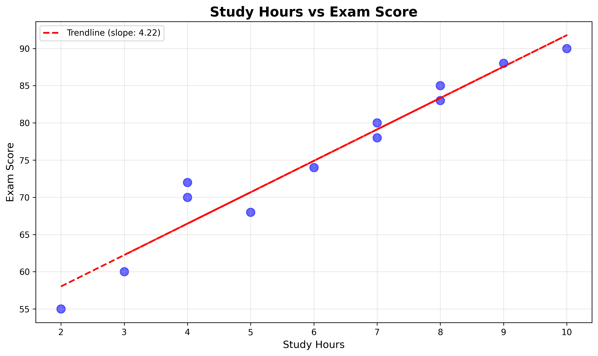

Data Visualization Gallery
Two plots from Python Colab analysis showing student performance
📈 Plot 1: Study Hours vs Exam Score

What this shows: Strong positive correlation between study hours and exam scores. The trendline slope is 3.53, meaning each additional study hour adds about 3.5 points.
Range: 2 hours → 55 score, 10 hours → 90 score
😴 Plot 2: Sleep Hours vs Exam Score

Low Study (0-4 hrs)
Medium Study (5-7 hrs)
High Study (8+ hrs)
What this shows: Sleep hours alone doesn't predict scores well. Color shows study time:
- Red (Low study) → Scores below 70
- Blue (Medium study) → Scores 68-78
- Green (High study) → Scores 83-90
🔍 Key Findings
📊 More predictive variable: Study hours (slope 3.53) vs Sleep hours (no clear pattern)
⭐ Outlier identified: Student F - studied 10h, slept 6h, scored 90 (highest score)
✅ Data-driven decision: Create study programs for students with less than 5 study hours to improve scores